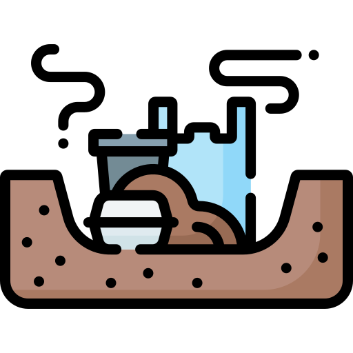

|
ENVIVALION |
|
|
ENVIVALION |
Se denomina relleno sanitario al espacio donde se depositan los residuos sólidos de una ciudad después de haber recibido determinados tratamientos.
El objetivo principal de todo relleno es el de almacenar la basura en áreas o terrenos grandes lejos de las ciudades, disponiéndolos en capas de determinado espesor, las cuales se van cubriendo con ciertos materiales aptos para esto, como puede ser, por ejemplo, arcilla o hule polietileno con ciertas características específicas para este uso, sobre todo para lograr tener un adecuado manejo de los olores y gases que se generan después de cubrir dichos residuos.
La operación de los rellenos sanitarios debe estar respaldada por una documentación específica y seguir distintas normas que regulen tanto al personal que labora en el lugar, como aquel encargado de recolectar la basura, así como otros factores que derivan del espacio.
Hablar de un relleno sanitario implica hacer referencia a una obra de infraestructura moderna, la cual cuente con una instalación diseñada y operada para llevar a cabo funciones de saneamiento básicas.
Los rellenos sanitarios se conforman de celdas, las cuales protegen el suelo mediante una geomembrana hecha de hule, ésta canaliza los lixiviados (líquidos altamente contaminantes que se generan por la descomposición orgánica de los residuos). El sistema de drenaje es de suma importancia para que los lixiviados no lleguen al subsuelo ni a los mantos freáticos, evitando su contaminación.
Estos espacios también deben contar con la infraestructura necesaria a base de pozos, que capten el gas metano producido por los desechos y así realizar un adecuado manejo de dichos gases; debido a este proceso la colocación de tubos para ventilación es prioritario. Es importante mencionar, que la separación de la basura es primordial para evitar la generación excesiva de gas metano. Aunque en algunas ocasiones el gas puede recuperarse y ser procesado para crear otras fuentes de energía, tal como la electricidad.
|
Relleno Sanitario La Glorita Siendo uno de los más grandes del país, el Relleno Sanitario La Glorita recibe actualmente un promedio de 800 toneladas de resisuos sólidos por día, de ellos un 53% provinientes de Pereira y el resto que corresponden a 24 municipios de Risaralda, Noter del Valle, Caldas, y en ocasiones municios del Quindío. El proceso de recepción y disposici+ón de las basuras, trabajo que se cumple de manera ardua todos los días por parte del equipo profesional y operario de las empresas Atesa de Occidente y Aseo de Pereira,se ha convertido en un modelo a seguir, al dar cumplimiento con todo el plan ambiental y su normatividad. |
 |
Es por este motivo que, de manera permanente, se invita a toda la ciudadanía a realizar una adecuada separación en la fuente, para que residuos tan contaminantes como el plástico no lleguen con tanta frecuencia al relleno.
Leer más sobre:
|
Explotación de Recursos |
Contaminación |
Cambio Climático |